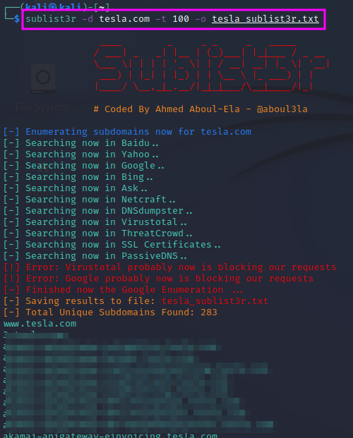
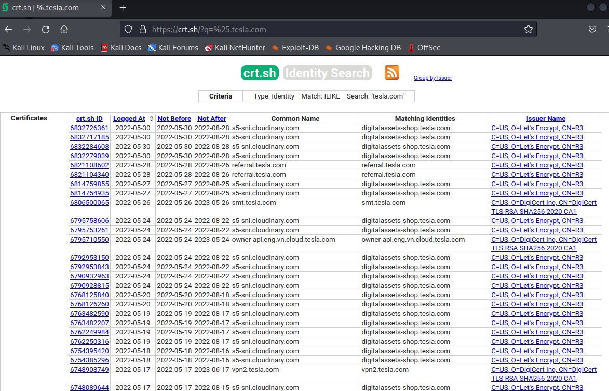
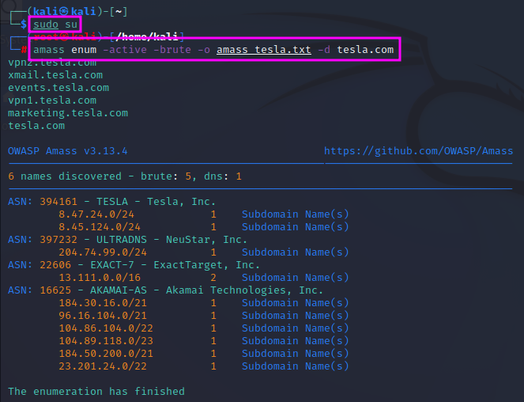
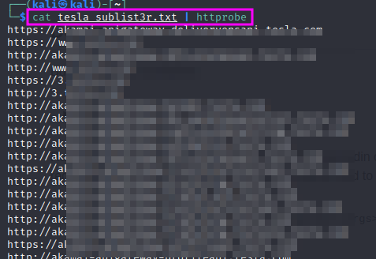

Hunting Subdomains (Parts 1 and 2)
One of the first steps in reconnaissance is to find out which subdomains belong to the target. One reason is that one might find subdomains which should not be publicly accessible, e.g. dev.tesla.com, another reason is that it gives us a chance to attack multiple websites and not only one.
A tool that can be used for these purposes is sublist3r, which crawls a couple of search engines and databases to find known subdomains that match the entered root domain. sublist3r can be installed with sudo apt-get install sublist3r. To make the scan faster, one can use multiple threads with the -t command line switch. The output can be written to a file using the -o command line switch, e.g. sublist3r -d tesla.com -t 100 -o tesla_sublist3r.txt
Another service that can be used to list subdomains is crt.sh. You can enter a domain name, using % as a wildcard, and the database will list all subdomains for which certificates have been issued. These can be 3rd and 4th level subdomains.
{kind=link}
TCM recommends to look for dev, test, sso, stage, for mail servers and perhaps also for clues as to which tools are used on the target.
Finally, a popular tool among bug-bounty hunters is OWASP’s Amass tool that can be cloned from github. However, it was already installed on my version of Kali Linux. I could not get proper results when I tested Amass in intel mode. After some trying, I believe that I still need to set up the config.ini file correctly, especially add credentials to use the APIs that the program uses. This seems to be a task that requires some diligence. I will postpone that until later. Youtube videos might help.
To check whether the found subdomains are alive, one can run the found domains through a tool called httprobe, which is preinstalled on my Kali Linux. It can also be downloaded from a github repository. httprobe is used as a filter that prints only those entries in a text file which are active website: cat <subdomain file list> | httprobe.
